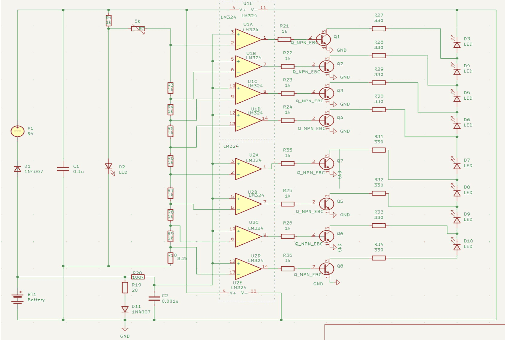

Analog Design · Unfinished
Battery Tester Board

This one stopped at the schematic. The design is finished and the capture is complete, but the term ran out before layout, so there is no board and nothing has been measured. It's here because the circuit is worth explaining, not because it works.
- Readout
- Eight LEDs as a bar graph
- Comparators
- Two LM324 quad op-amps — eight channels
- Reference
- 1 kΩ ladder with an 8.2 kΩ tail, 5 kΩ trimmer for calibration
- Test load
- 20 Ω through a 1N4007, across the cell under test
- Drive
- NPN per channel, 1 kΩ base, 330 Ω LED ballast
- Supply
- 9 V, reverse-protected, with a power-on indicator
- Tool
- KiCad
A voltmeter measures the wrong thing
Put a multimeter across a tired AA and it will often read close to 1.5 V. Put that same cell in a device and it dies immediately. The open-circuit voltage of a battery says almost nothing about whether it can still deliver current — what matters is what the voltage does when you actually ask something of it.
So the first component in this circuit isn't a measuring element at all. It's a 20 Ω resistor placed directly across the cell under test, through a 1N4007. That's the load. Everything downstream measures the cell while it's working, and a battery with high internal resistance sags under it in a way it never would on an open-circuit reading.
Eight comparators, one ladder
The readout is a bar graph: eight LEDs, each lighting once the battery clears a slightly higher threshold. Getting eight thresholds out of one voltage is a job for comparators, and two LM324 quad op-amps supply exactly eight of them.
Each comparator's reference comes from a single chain of 1 kΩ resistors with an 8.2 kΩ tail, tapped at eight points. Because every threshold is derived from the same chain, they can't drift apart relative to one another — and a 5 kΩ trimmer at the top of the chain slides all eight together, which is what makes the scale calibratable to a particular chemistry rather than fixed at design time.
An LM324 output can't drive an LED at any brightness worth looking at, so each channel ends in an NPN transistor through a 1 kΩ base resistor, with 330 Ω setting the LED current. The 9 V supply gets a series 1N4007 against reverse connection and its own indicator LED, on the theory that the most common failure with a test instrument is someone wiring it up backwards.
Where it stopped
The schematic is finished; the board is not. Layout, fabrication, and any actual measurement were still ahead when the term ended, so the threshold spacing has never been checked against real cells and the 20 Ω load has never been verified as the right value for the chemistries it would see.
Leaving it here rather than deleting it is deliberate. The design reasoning is the part worth showing, and the honest status of a project is more useful than a tidier version of it.